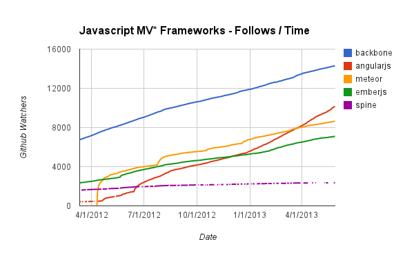

Industrialiser ses développements HTML5 avec AngularJS

Matthieu Lux
-
 @Swiip
@Swiip
- http://swiip.github.io/
-
 @LyonJS
@LyonJS
- http://lyonjs.org/
-
 Auteur InfoQ
Auteur InfoQ
- http://www.infoq.com/fr/
- JavaScript : AngularJS, jQuery, Grunt, NodeJS...
- Java : Spring, Data, MVC, Integration
- Mobilité : jQuery Mobile, Phonegap, Android
Objectifs

Evolution du Web

Evolution des navigateurs
Implications
- Logique de développement d'applications lourdes
- Intelligence côté client
- Réactivité
- Animations
- Modifications de l'architecture
- Travailler avec les navigateurs
- Développer en JavaScript
- Utiliser des frameworks adpatés
- Industrialiser les développements
Programme
- Écosystème
- Le langage JavaScript, les frameworks
- Les outils : build, qualité, tests
- AngularJS
- Le projet, les orientations
- Les fonctionnalités
- Les tests
Écosystème JavaScript et ses outils

JavaScript
le langage
Historique 1/2
- Créé par Brendan Eich en 1995 pour Netscape
- Netscape soumet le JavaScript à ECMA en 1996
- ECMAScript 1 paraît en 1997
- ECMAScript 3 paraît en 1999
- Première version largement supportée
- Implémenté par JavaScript, JScript et ActionScript
Historique 2/2
- ECMAScript 5 paraît en 2009
- Supporté par tous les navigateurs récents
- Fusion implicite de JavaScript et ECMAScript
-
ECMAScript 6 : projet Harmony
- Evolution majeure
- Très prometteur et très attendu
- Promesse d'implémentation rapide
Stack Web
Le JavaScript est un langage normal mais qui évolue dans le navigateur
Quelques notions
- Langage de script : interprété et non compilé
- Syntaxe hérité du C et du Java
- Non typé :
var a = 1; a += 'foo'; a += 2; //--> a = '1foo2'var a = new String('foo'); b = new String('bar');
a.up = function() {
return this.toString().toUpperCase()
};
a.up(); //--> FOO
b.up(); //--> Undefined
String.prototype.up = a.up;
b.up(); //--> BARvar a = 1, b = function() { a++ };
b();
a; //--> 2Les langages qui compilent en JavaScript
- Propose une syntaxe inspirée du Ruby
- Utilise l'indentation pour les blocs
- Allège le code en parenthèses et accolades
- Reste très proche du JavaScript
- Le code JavaScript généré est très lisible
- A tendance à produire du code plus fiable
|
|
|
|
- Proposé par Microsoft en 2012
- Génère un code JavaScript très propre
- Ajoute principalement du typage et des classes
- Proposé par Google en 2011
- Beaucoup plus ambitieux
- Contient ses propres outils pour faire du Web
Écosystème des frameworks Web

Les grandes familles
|
Les librairies "Ajax"
|
Les frameworks front-ends

|
|
Les frameworks MVC
|
Les librairies spécialisées

|
Les librairies Ajax 1/2
- Fonctionnalités :
- Sélection dans le DOM
- Modification du DOM
- Ecoute d'évènements
- Requêtes Ajax
-
Marché très disputé dans les années 2005 - 2007
- PrototypeJS
- Dojo Toolkit
- Mootools
- Yahoo UI
Les librairies Ajax 2/2
- Marché écrasé par jQuery
- Pratiquement considéré comme un standard
- Prérequis à de nombreuses librairies
-
Seule faille à jQuery est son poids
- Un peu lourd pour du mobile
- Une alternative très populaire : Zepto
Les frameworks
Front-Ends
- Fonctionnalités :
- Base CSS moderne
- Grille de positionnement
- Design des composants HTML de base
- Widgets courants : onglets, popup...
- Bootstrap est la référence
- Premier projet sur GitHub
- Simple d'utilisation
- Design propre et sobre
- De nombreux widgets
Les frameworks MVC
- Fonctionnalités :
- Réalisation d'interface en JS
- Structure MVC
- Templating
- Trois acteurs majeurs actuellement
- BackboneJS : Plus connu mais un peu trop simple
- EmberJS : Très riche mais complexe
- AngularJS : En pleine explosion, simple & puissant !
-

Les librairies spécialisées
- A sélectionner en fonction des besoins
- Graphique
- Cartographie
- Dessin
- 3D
- Son
-
Node.js

Définition
Node.js est une plateforme, pas un framework ni un serveur Web.

- Node.js permet d'executer du JS
- Basé sur l'interpreteur JS V8
- Apporte une API système codé en C
- Entièrement basé sur des I/O asynchrones
- Atouts :
- Optimisations de V8
- Portable
- Léger
- Profite de l'asynchronisme du JS
NPM
Node Packet Manager

- Système de package intégré à Node.js
- Téléchargement automatique des dépendances
- Gestion des dépendances transitives avec isolation
Cas d'utilisation
Développements
- Un script Node.js permet facilement de :
- Copier, compresser des fichiers
- Compiler du CoffeeScript ou du less
- "Minifier" du JavaScript
- Lancer des tests JavaScript
- Surveiller des modifications sur un répertoire
- Lancer un serveur HTTP de développement
Cas d'utilisation
Serveur Web
- Les I/O asynchrones lui permettent :
- Pouvoir gérer beaucoup de requêtes simultanées
- Être très réactif pour des opérations simples
- Peu adapté pour des traitements lourds
- Node.js n'est pas un serveur Web
- De très bons frameworks existent :
- Express.js
- Socket.IO
- Mongoose
Outils du
JavaScript et du Web
Meta langages
-
Langages de programmation
- CoffeeScript
- TypeScript
-
CSS
- Less
- Compass
-

Optimisation
-
Parser / Minifier / Compressor / Beautifier
- UglifyJS
- JSMin
- YUICompressor
- Google Closure Compiler
- Concaténation
- Script
- Documentation
- JSDoc
Développement
-
Vérification de qualité
- JSHint
- JSLint
-

-
Tests
- Jasmine
- Mocha
- Qunit
- Karma
-


Gestion des dépendances
Bower
-
Projet
- A été démarré chez Twitter
- Registre ouvert & public
- S'installe avec Node Package Manager
- Récupère les packages via Git
- Principe
- Manifest : bower.json (anciennement component.json)
- Se base sur un registry
- Utilise le versionning des tags Git
- Fonctionne le plus souvent avec GitHub
- http://sindresorhus.com/bower-components/
Fonctionnalités
-
search
- Rechercher une librairie dans le registre
-
install
- Installer une librairie
-
list
- Afficher l'arbre de dépendances du projet
-
update
- Mettre à jour une librairie
Build
Grunt
- Projet
- Outils de build du web et du JavaScript
- Automatisation
- Principe
- Packaging
- Harmonisation
- Tests
- Qualité
Modularité
- NPM
- Nombreux plugins Grunt
- Bridge pour tous les outils du JavaScript
- API simple
- Customisation de tâches
- Enregistrement de nouvelles tâches
Cas d’utilisation
Développement
- watch
- Observe les modifications sur les sources
- Lance des tâches en fonction des modifications
- less
- "Compile" le Less
- coffee
- "Compile" le CoffeeScript
Cas d’utilisation
Tests
- jasmine
- Lance des tests Jasmine
- mocha
- Lance des tests Mocha
- casper
- Lance des script casper dans PhantomJS
Cas d’utilisation
Packaging
- cdnify
- Modifie les imports du index.html pour utiliser des CDN
- concat
- Concatène des fichiers JS ou CSS
- uglify
- Parse, compresse et optimise les fichiers JavaScript
Yeoman
Projet
-
Équipe
- Paul Irish
- Addy Osmani
- Sindre Sorhus
- Mickael Daniel
- Eric Bidelman
-
Trois outils
- Yo
- Bower
- Grunt
Yo
- Initiateur de projet
- De nombreux générateurs
- Dont AngularJS
Gruntfile
-
Configuration par défaut très complète
- server
- build
- test
grunt.registerTask('server', [
'clean:server', 'coffee:dist', 'compass:server',
'livereload-start', 'connect:livereload', 'open', 'watch' ]);
grunt.registerTask('test', [
'clean:server', 'coffee', 'compass', 'connect:test', 'karma' ]);
grunt.registerTask('build', [
'clean:dist', 'jshint', 'test', 'coffee', 'compass:dist',
'useminPrepare', 'imagemin', 'cssmin', 'htmlmin', 'concat',
'copy', 'cdnify', 'ngmin', 'uglify', 'rev', 'usemin' ]);Développement

IDE
- IntelliJ / WebStorm
- Eclipse
- Sublime Text 2
Chrome Dev Tools
- Ou Firefox Dev Tools
- Opera Dragon Fly
- Microsoft Visual Web Developper
Chrome Dev Tools
- Inspecteur de la page
- Console !
- Debugger complet
- Analyseur réseau
- Profiler
- Emulateur mobile
- Batarang
Architecture serveur pour une application JavaScript
Faire une application en JavaScript
- Fichiers statiques : HTML / JavaScript / CSS
- Réaliser le rendu des templates en JavaScript
- Single Page Webapp
- Echanges en JSON avec le serveur
Architectures Serveur
AngularJS

"GitHub" Trends
Le Projet
Genèse
- Créé en 2009
- Miško Hevery et Adam Abrons
- Visualisation de données JSON
- Hors du contexte de Google
- Démarrage discret
- Investissement massif de Google en 2011
- Refonte du site, du logo
- Constitution d'un équipe dédiée avec Miško Hevery
- Brad Green, Igor Minar, Vojta Jina, Brian Ford
- Communication importante dans les conférences
Stratégie Google
N'engage que moi !
- GWT sur le déclin
- JavaScript en vogue
- Opportunité en interne
- (N'est plus) En conflit avec Dart : https://github.com/angular/angular.dart
- Convergence sur les WebComponents
Orientations
Déclaratif plutôt qu'impératif
- L'impératif est très lourd pour les UIs
- La lisibilité est bien meilleure en déclaratif
- jQuery pousse à faire de l'impératif
Extension du Web
Conserve le paradigme du Web

- Extension de l'HTML pour les besoins modernes
- Utiliser l'HTML comme langage déclaratif
- Limiter la quantité de code JavaScript
Propreté et puissance
- Le code à produire
- Rapide à produire
- Lisibilité
- Simplicité
- Concision
- Structuration du code
- Organisation des fichiers
- MVC
- Widgets
- Accès facilité à des fonctionnalités avancées
- Navigation
- Dialogue REST
- Animations
"Toutes" les applications
- Peut s'adapter à toutes les utilisations
- Une zone réduite de la page
- Petite application Web
- Application Web importante
- Peu logique pour une zone localisée, préférer jQuery
- Idéal pour une application moyenne
- Pour une application très complète
- Si possible, la diviser
- Sinon, utiliser quelques bons modules
Fonctionnalités
MVC
JSON / HTML / JS
- Modèle : Données JSON standards : le scope
- Vue : Document HTML étendu
- Controleur : Fonction JavaScript
Extension du HTML
- Utilisation du HTML standard comme vue
- Ajout de fonctionnalités
- Via des nouvelles balises
- Via des nouvelles propriétés
- En commentaire ou avec des class (moins utilisé)
<ul>
<li ng-repeat="contact in contacts" ng-click="click($index)">
{{contact.name}}
</li>
</ul>- Meilleure lisibilité
- Concision du code
Two Way Data Binding
- Modèle vers la vue
- Données du modèle sont liées à la vue
- Modifications du modèle rafraichissent la vue
- Exemple : arrivée asynchrone des données
- Vue vers le modèle
- Les saisies de l'utilisateur sont liées au modèle
- Modifications du modèle rafraichissent la vue
- Exemple : saisie dans un formulaire
<input type="text" ng-model="hello">
<p>{{hello}}</p>Directives & Filtres
- Directives
- Permet d'associer du comportement au DOM
- Evite d'avoir à faire des sélections du DOM
- API pour faire du plus simple au plus complexe
- Template et controller pour faire des Widgets
- Filtres
- Permet de transformer les données déclarativement
- Plus propre et plus lisible
- Fonctionne pour des listes ou des valeurs simples
<input type="text" ng-model="search">
<datagrid>
<line ng-repeat="contact in contacts | orderBy:'name' | filter:search">
</datagrid>Injection de dépendances
- Le code JavaScript est localisé dans des modules
- Permet de la structure et de l'isolation
- Les modules sont composés d'éléments typés
- Controleurs, services, directives...
- Gère les dépendances et l'ordre d'execution
- Orchestre les executions des codes JavaScript
angular.module('myModule', ['myDependency'])
.factory('myService', function() { return myService })
.controller('myController', function($scope) { /* do stuff */ })
.directive('myDirective', function() { return { /* directive */ }});Navigation
- Le routeur d'AngularJS permet de gèrer des URLs
- L'URL utilise un "#" qui évite le rechargement
- Peut exploiter l'HTML5 pour le masquer
- Gère des paramètres
- Associe une vue et un controleur à chaque route
angular.module('phonecat', [])
.config(function($routeProvider) {
$routeProvider
.when('/phones', {
templateUrl: 'partials/phone-list.html',
controller: PhoneListCtrl
})
.when('/phones/:phoneId', {
templateUrl: 'partials/phone-detail.html',
controller: PhoneDetailCtrl
})
.otherwise({redirectTo: '/phones'});
});Ressources REST
- Module optionnel d'Angular
- Configuré à partir de l'URL
- Gère les méthodes : GET, PUT, POST, DELETE
- Permet de positionner un paramètre dans l'URL
- Peut renseigner l'URL avec un champ de l'objet
- Fournit des objets enrichis : $save, $delete
var User = $resource('/user/:userId', { userId: '@id' });
var user = User.get({ userId: 123 }, function() {
user.abc = true;
user.$save();
});Testabilité
- Tests unitaires
- L'injection de dépendances oriente facilite les tests
- Permet de tester élément par élement
- Permet de mocker les autres composants
- Produit des tests vraiment unitaires
- Jasmine & Angular-mock
- Tests end to end
- Angular-scenario permet de tester des scenarios
- Il est possible de simuler des actions utilisateurs
- Karma Test Runner
- Karma permet d'automatiser l'execution des tests
- Surveille les sources pour relancer les tests
En pratique
Debugging
- Toutes les fonctions Angular sont nommées
- Les exceptions sont plutôt explicites
- Debugger JavaScript
- Log console, avec affichage riche des données
- Extension Chrome Batarang
- Consultation des scopes
- Performances
- Dépendances
Performances
Les performances d'AngularJS ne sont pas dépendantes de la charge du serveur
Elles sont dépendantes de la machine et du navigateur du client
- Le serveur est moins sollicité (pas de rendu à faire)
- Poids : raisonnable, attention à l'accumulation de plugins
- Peut ralentir s'il y a trop de données affichées à l'écran
- Si possible, alléger la page
- Sinon, optimiser les binding pour réduire les rafraichissements
Compatibilités
- Ok :
- IE8+, Chrome, Firefox, Opera, Safari...
- Attention : http://docs.angularjs.org/guide/ie
- IE 6 et 7
- Limitations du au code HTML non standard
- Ajouter : xmlns:ng="http://angularjs.org"
- Utiliser uniquement des attributs, pas de balise
- Validation W3C :
- AngularJS peut utiliser le prefix "data-"
- Exemple : <div data-ng-view>
- Permet d'avoir un code totalement valide
SEO
Search Engine Optimization
- Promesses de Google d'interpréter le JavaScript
- Consiste à faire s'executer AngularJS côté serveur
- Fonctionne avec un routage serveur et PhantomJS
- Nécessite une bonne gestion des URLs
- Répond à des problèmes d'accessibilités
- http://www.yearofmoo.com/2012/11/angularjs-and-seo.html
Arborescence d'un projet
Exemple d'arorescence
- app
- components
- img
- styles
- scripts
- controllers
- admin.js
- home.js
- directives
- filters
- app.js
- controllers
- views
- admin.html
- home.html
- index.html
- test
- Gruntfile.js
Faiblesses
- Routeur
- Ne gère qu'une vue
- Ne gère pas d'imbrications
- Pallier par le projet Angular UI Router (très jeune)
- API des directives
- API assez complexe à appréhender
- Beaucoup d'astuces à connaître
- Doit converger vers les Web Components
- Resources
- Nécessite un service REST "standard"
- Difficile à étendre
- $http ou Restangular
Extensions
http://ngmodules.org/Composants
- Bootstrap
- AngularStrap : intégration propre
- UI Boostrap : réimplémentation sans jQuery
- ngGrid
- Infinite Scroll
- Typehead
- Drag and Drop
Services
- UI Router : très prometteur !
- Restangular
- ng-translate
- ngUpload
- http-auth-interceptor
Tests
Tests unitaires
- Propose Jasmine par défaut
- Fonctionne avec n'importe quel framework
- L'injection de dépendance joue au maximum
- Angular Mock apporte tout ce qu'il faut pour compléter
- Accès à l'injection de dépendance
- Possibilté de remplacer des dépendances
- Mock de requêtes HTTP
beforeEach(inject(function ($httpBackend) {
$httpBackend
.expectGET('/count')
.respond([1, 2, 3]);
}));End 2 End
Angular Scenario
- Angular propose une fonctionnalité unique
- Fonctionne dans tous les navigateurs
- Permet de simuler un scénario dans un navigateur
- Propose une API de controle de l'objet "browser"
- Propose une API pour tester l'état de la page
describe('myApp', function () {
it('should redirect index.html to index.html#/hello', function () {
browser().navigateTo('../../app/index.html');
expect(browser().location().url()).toBe('/hello');
});
});Karma
JavaScript Test Runner
- N'est pas une solution de test
- Il s'agit de "l'executeur"
- Peut fonctionner en dehors d'AngularJS
- Sera intégré à WebStorm 7 / IntelliJ 13
- Lance les tests dans un ou plusieurs navigateurs
- Peut surveiller les sources pour relancer les tests
- Fonctionne avec Angular Scenario
Le Futur
- AngularJS 1.2 (actuellement branche 1.1.x)
- Animations
- Promesses
- Directives en commentaire HTML
- AnuglarJS 2.0 (?)
- Web Components
- Polymer JS